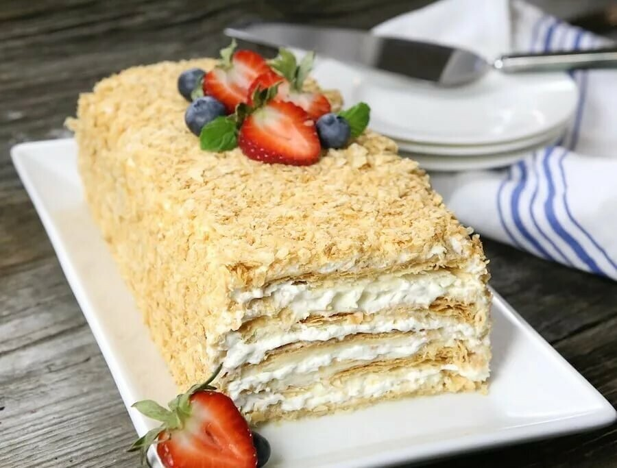

Napoleon recipe

Description
Napoleon Cake is one of my favorite classic Russian cakes. It has a multitude of very thin cake layers that are made from puff pastry dough and are so flaky, puffy and delicate. The smooth, rich and luscious pastry cream is such a magical combination with the cake layers. I make my frosting even better with a combination of pastry cream, buttercream and lighten it up with some whipped cream, which makes it so fluffy, luxurious and velvety in texture. It becomes so billowy and soft, almost cloud like.
pastry cream frosting softens the thin, puffy cake layers and they become so tender and the whole cake simply melts in your mouth. The cake needs to stand in the refrigerator for a few hours to soften, as the frosting seeps into the cake. I like to let the cake stand at room temperature for just a bit before serving, and it becomes even softer and gentle in texture.
Ingredients
- 4 1/2 cups all purpose flour (plus another 1/2 cup or so for dusting the counter when rolling out the cake layers)
- 1/2 teaspoon salt
- 3 1/2 sticks butter (cold) (total: 14 oz)
- 3/4 cup chilled water
- 1 Tablespoon distilled white vinegar
- 2 Tablespoons vodka
- 2 eggs (beaten)
Steps
- Combine the flour and salt on the counter or food processor. Add the cold butter, cut into chunks, into the flour and use a knife to work it into the flour, until there are pea sized bits of butter throughout the dough.
- In a medium bowl or large mixing cup, whisk the water, vinegar, vodka, and beaten eggs until evenly mixed. The vinegar and the vodka help to make the cake layers really tender and flaky. The vodka gives the dough more liquid and makes it easier to work with and roll out, but when the cake layers bake, the vodka will cook out, which makes the cake layers more crisp. You won’t be able to taste the vinegar or vodka in the cake at all.
- Make a well in the center of the flour on the counter and pour in the liquid ingredients. Gently but quickly mix the dough, just until it comes together. Knead just a little, working the flour into the dough. Work as quickly as you can, so that the chunks of butter don’t completely melt into the dough. The chunks of butter will melt as the cake layers bake and will form air pockets in the cake layers and give them that wonderful thin, flaky, puffed texture.
- Form the dough into a disc shape. Wrap the dough into parchment paper or aluminum foil and place it into the refrigerator. Chill for a few hours or overnight.
- Make the pastry cream. Follow the instructions in this post. The recipe is slightly different, but the technique is exactly the same, so use the ingredient amounts from this post, following the instructions in the other post.
- Chill the pastry cream in the refrigerator until completely cool, a few hours or overnight.
- I usually make the cake layer dough and the pastry cream the day before I am planning on making the cake.